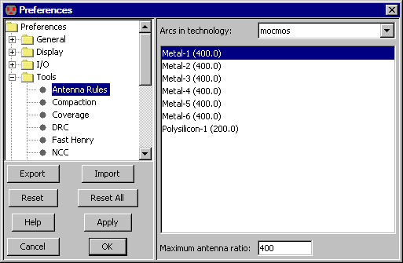

Antenna rules are required by some IC manufacturers to ensure that the transistors of the chip are not destroyed during fabrication.
In such processes, the wafer is bombarded with ions in order to create the polysilicon and metal layers.
These ions must find a path through the wafer (to the substrate and active layers at the bottom).
If there is a large area of poly or metal, and if it connects ONLY to gates of transistors
(not to source or drain or any other active material) then these ions will travel through the transistors.
If the ratio of the poly or metal layers to the area of the transistors is too large, the transistors will be destroyed.
To check for antenna rule violations, use the Antenna Check command (in menu Tool / ERC
).
After analysis is done, you can review the errors by typing ">" to see the next error and "<" to see the previous error.
You can also see the list of errors in the cell explorer
(see Section 4-8).
|
You can control the Antenna Checker with the Antenna Rules Preferences
(in menu File / Preferences..., "Tools" section, "Antenna Rules" tab).
The dialog lets you modify the required ratio of a layer (poly or metal) to the transistor area.
|  |